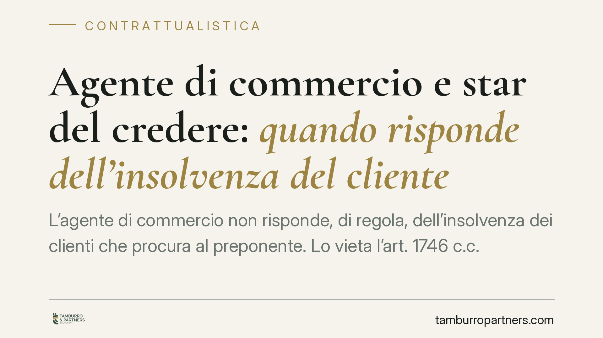

Agente di commercio e star del credere: quando risponde dell'insolvenza del cliente
L'agente di commercio non risponde, di regola, dell'insolvenza dei clienti che procura al preponente. Lo vieta l'art. 1746 c.c. Ma una recente ordinanza della Cassazione (1252/2026) ricorda che una dichiarazione firmata dopo l'inadempimento può trasformarsi in ricognizione di debito, con conseguenze dirette sul patrimonio dell'agente. Un confine sottile che conviene conoscere prima di firmare.

Il principio: l'agente non garantisce i pagamenti
Chi lavora come agente di commercio promuove la conclusione di contratti per conto di un preponente, cioè l'impresa che rappresenta. Il suo compito è procurare clienti, non assicurare che questi paghino.
Questo principio è scolpito nell'art. 1746, terzo comma, del Codice civile. La norma vieta il cosiddetto patto di star del credere: l'accordo con cui l'agente si assume, in tutto o in parte, il rischio dell'inadempimento del cliente. In pratica, l'impresa non può scaricare sull'agente le conseguenze economiche di un cliente che non salda la fattura.
Il divieto è stato introdotto per riequilibrare un rapporto spesso squilibrato, in cui il preponente dispone di maggiore forza contrattuale. Senza questa tutela, l'agente rischierebbe di trasformarsi in un garante occulto di ogni operazione andata a buon fine solo sulla carta.
Le eccezioni previste dalla legge
Il divieto non è però assoluto. Lo stesso art. 1746 ammette un'ipotesi circoscritta: le parti possono convenire una garanzia dell'agente limitata a un singolo affare, purché di importo contenuto rispetto alla provvigione dovuta e a condizione che sia pattuito un compenso specifico per quella garanzia.
In altre parole, la garanzia è lecita solo se:
- riguarda una singola operazione, non la generalità dei contratti;
- è proporzionata e non eccessiva rispetto alla provvigione;
- è remunerata con un corrispettivo apposito.
Un patto che violi questi limiti è nullo. L'agente che lo abbia sottoscritto può opporne la nullità e rifiutare il pagamento richiesto dal preponente.
Il nodo della ordinanza 1252/2026
La Corte di Cassazione, con l'ordinanza n. 1252/2026, è intervenuta su un punto delicato: cosa accade quando l'agente firma una dichiarazione con cui riconosce di dover pagare per un cliente insolvente, dopo che l'inadempimento si è già verificato.
Secondo i giudici, una simile dichiarazione non ricade necessariamente nel divieto di star del credere. Il patto vietato dall'art. 1746 è infatti un accordo preventivo, con cui l'agente assume in anticipo il rischio di future insolvenze. Diverso è il caso di una dichiarazione successiva, resa quando il debito del cliente è ormai certo e determinato.
In questa ipotesi, la dichiarazione dell'agente viene qualificata come ricognizione di debito ai sensi dell'art. 1988 c.c.: un atto con cui si riconosce un'obbligazione esistente. L'effetto è rilevante, perché la ricognizione dispensa il creditore dall'onere di provare il rapporto sottostante, che si presume esistente fino a prova contraria.
Implicazioni pratiche per l'agente
Per chi opera come agente di commercio, la distinzione è tutt'altro che teorica. Un conto è firmare, all'inizio del rapporto, una clausola che addossa il rischio dei mancati pagamenti: quella clausola, se non rispetta i limiti di legge, è nulla.
Altro conto è sottoscrivere, a insolvenza avvenuta, un documento in cui ci si impegna a coprire il debito del cliente. In quel caso non si può invocare il divieto di star del credere: la firma vale come riconoscimento di un debito proprio e può essere azionata dal preponente in giudizio con notevole facilità probatoria.
Il rischio concreto è di ritrovarsi a rispondere con il proprio patrimonio di un'obbligazione che, in origine, non gravava sull'agente.
Cosa fare in concreto
- Leggete con attenzione il contratto di agenzia prima della firma: individuate ogni clausola che vi attribuisca garanzie sui pagamenti dei clienti e verificatene la conformità all'art. 1746 c.c.
- Non sottoscrivete dichiarazioni post-inadempimento senza una valutazione tecnica: una firma apparentemente innocua può valere come ricognizione di debito.
- Pretendete che eventuali garanzie siano remunerate e limitate al singolo affare, come richiede la legge.
- Conservate la documentazione relativa alle operazioni procurate, utile a contestare l'esistenza o l'entità del debito riconosciuto.
- Fate valere la nullità dei patti illegittimi: un patto di star del credere generalizzato non produce effetti e può essere opposto al preponente.
La materia richiede un esame caso per caso. Consigliamo di sottoporre a verifica legale ogni clausola o dichiarazione che possa trasferire sull'agente il rischio di insolvenza dei clienti.
---
Contributo informativo a cura di Tamburro & Partners - Avv. Giuseppe Tamburro. Non costituisce parere legale.
Ogni contratto ha il suo equilibrio.
Se vuoi una revisione delle clausole o una redazione su misura, scrivi allo studio. Ti rispondiamo entro un giorno lavorativo.